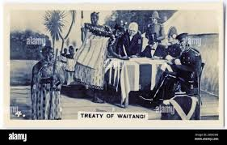
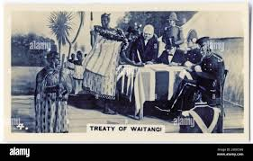

Treaty of Waitangi Introduction
The Treaty of Waitangi is a foundational document in New Zealand's history, signed on February 6, 1840, between representatives of the British Crown and various Māori chiefs. It marks the beginning of formal British colonization of New Zealand and is often considered the country's founding document. The Treaty was signed at Waitangi, in the Bay of Islands, North Island of New Zealand. The Treaty was drafted in both English and Māori versions, and there are significant differences between the two texts, leading to ongoing debate and legal challenges regarding its interpretation and implementation
However, the Treaty of Waitangi's interpretation and implementation have been subjects of contention and debate over the years. The document exists in both Māori and English versions, which have significant discrepancies in their wording, leading to differing understandings and expectations regarding land ownership, governance, and the protection of Māori rights. This linguistic and cultural divide has led to historical grievances, land disputes, and ongoing efforts to reconcile the treaty's promises with contemporary realities, culminating in significant legal and political developments aimed at addressing historical injustices and fostering greater partnership between Māori and the New Zealand government.
Despite its complexities and challenges, the Treaty of Waitangi remains a cornerstone of New Zealand's constitutional framework and continues to inform discussions on indigenous rights, cultural preservation, and the nation's identity. Through ongoing dialogue, legal processes, and initiatives aimed at honoring the treaty's principles of partnership, participation, and protection, New Zealand strives to forge a more inclusive and equitable society that respects the treaty's spirit and upholds the rights and aspirations of all its citizens.
.jpeg)
.jpeg) 

.jpeg)